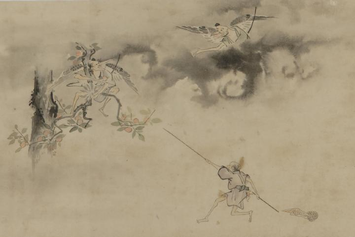

2体のの天狗が、上空から柿を取ろうとしている。地上では人間の男が長い棒でそれを阻止しようとしている。
著作者：幽花堂／出典：親書誌：U426_nichibunken_0060：鳥羽絵巻；トバエマキ／日付：2007／資源識別子：U426_nichibunken_0060_0001_0000
Copyright (c)2010- International Research Center for Japanese Studies, Kyoto, Japan. All rights reserved.